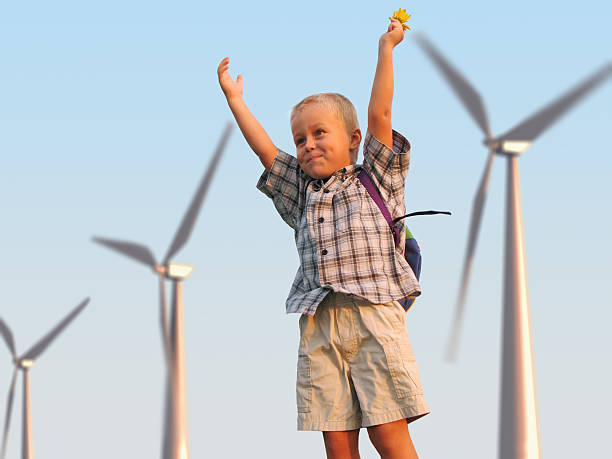

Value for Human
Our vision is:
- Reliability, Agility, Inclusivity, Efficiency, Passion, and Liability.
- We are the first and only integrated petrochemical company in Türkiye that produces industrial products to create sustainable value.
- As a key supplier of industrial raw materials, we strengthen the country's economy and support sustainable development. While contributing to employment growth, we lead the way for a clean future with our investments in energy efficiency, occupational health and safety, process safety, and environment-friendly production processes.
- We have developed nearly 60 petrochemical products by combining our experience of more than 56 years in the industry with our "digital thinking" approach. We contribute to numerous industries such as plastics, chemistry, packaging, pipes, paints, construction, agriculture, automotive, electronics, textiles, pharmaceuticals, detergents, and cosmetics with our high-value-added products such as thermoplastic, fiber, and paint raw materials.
- We meet about 17% of Türkiye’s petrochemical raw material needs by producing at full capacity in our 15 main and 6 auxiliary facilities in Aliaga, Izmir. We are the biggest exporter of the Aegean Region, with our supplies to approximately 78 countries.
- By combining our R&D experience with cutting-edge technologies, we are constantly improving our energy efficiency and product quality performance. With the Industry 4.0 standard we achieved in the digital transformation, we have become the only company from Türkiye to be selected in 2020 for the "WEF Global Lighthouse Network", which is determined by the World Economic Forum (WEF) and accepted as the "facilities of the future".
- Today, we are ready for the future with our faith, international success in digitalization, and strong sustainability vision.
- We are the first and only integrated petrochemical company in Türkiye that produces industrial products to create sustainable value.
- As a key supplier of industrial raw materials, we strengthen the country's economy and support sustainable development. While contributing to employment growth, we lead the way for a clean future with our investments in energy efficiency, occupational health and safety, process safety, and environment-friendly production processes.
- We have developed nearly 60 petrochemical products by combining our experience of more than 56 years in the industry with our "digital thinking" approach. We contribute to numerous industries such as plastics, chemistry, packaging, pipes, paints, construction, agriculture, automotive, electronics, textiles, pharmaceuticals, detergents, and cosmetics with our high-value-added products such as thermoplastic, fiber, and paint raw materials.
- We meet about 17% of Türkiye’s petrochemical raw material needs by producing at full capacity in our 15 main and 6 auxiliary facilities in Aliaga, Izmir. We are the biggest exporter of the Aegean Region, with our supplies to approximately 78 countries.
- By combining our R&D experience with cutting-edge technologies, we are constantly improving our energy efficiency and product quality performance. With the Industry 4.0 standard we achieved in the digital transformation, we have become the only company from Türkiye to be selected in 2020 for the "WEF Global Lighthouse Network", which is determined by the World Economic Forum (WEF) and accepted as the "facilities of the future".
- Today, we are ready for the future with our faith, international success in digitalization, and strong sustainability vision.
- Our commitment to sustainable practices extends beyond our own operations. We actively engage in community development and educational initiatives, fostering a culture of social responsibility and environmental stewardship.
- We prioritize the health and safety of our employees, continuously investing in advanced safety systems and providing comprehensive training to ensure a safe working environment.
- Our innovative approach to petrochemical production involves the use of advanced analytics and machine learning, enhancing both the efficiency and quality of our products.
- We are dedicated to reducing our carbon footprint and actively pursue initiatives to increase the use of renewable energy sources in our manufacturing processes.
- Our customer-centric approach has led to strong partnerships across various sectors, enabling us to better understand and meet the dynamic needs of the market.
- We pride ourselves on our transparent and ethical business practices, ensuring that all our operations are conducted with the highest standards of integrity and accountability.
- Looking towards the future, we are committed to continuous innovation, aiming to lead the petrochemical industry with pioneering solutions that contribute to a more sustainable and prosperous world.
Mission
- Petkim produces high quality petrochemical products in its integrated and high technology premises and it imports high quality petrochemical products, compatible with international standards.
- Petkim sells its products in domestic market and in international opportunity markets with a strong customer focus.
- Petkim cares about innovation, it takes quality as its philosophy of life and grows with its partners by increasing Petkim’s market value and profitability.
- Petkim keeps the competence, satisfaction and loyalty of its employees at maximum level with innovative human resource applications.
- Petkim follows universal ethical values, saves the environment, provides occupational health and safety, supports and adds value to the society with a sustainability perspective
Values
- Adding value to our customers
- Employee focused
- Creativity and innovation
- Occupational health and safety
- Taking responsibility for a sustainable future
- Product quality and continuity
- Adding value through partnership